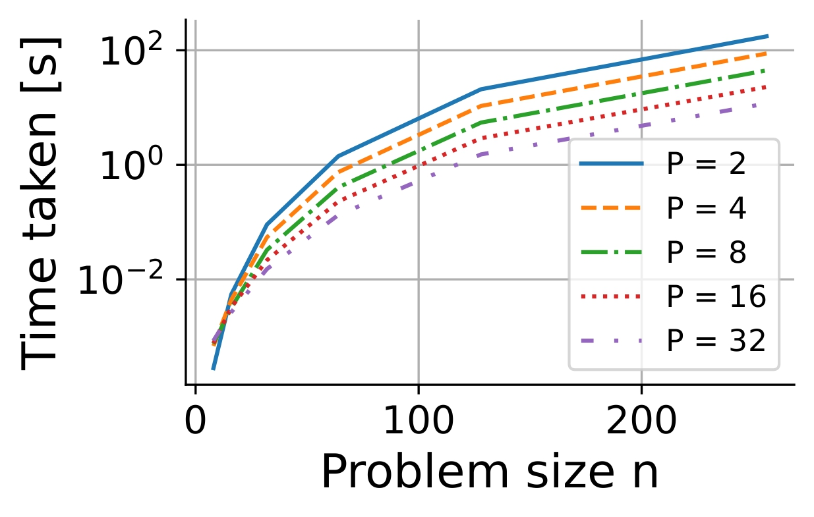
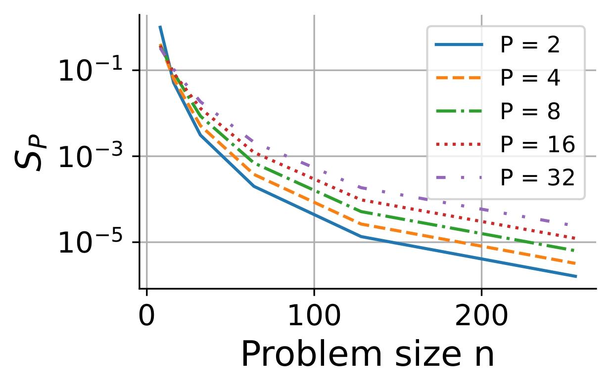
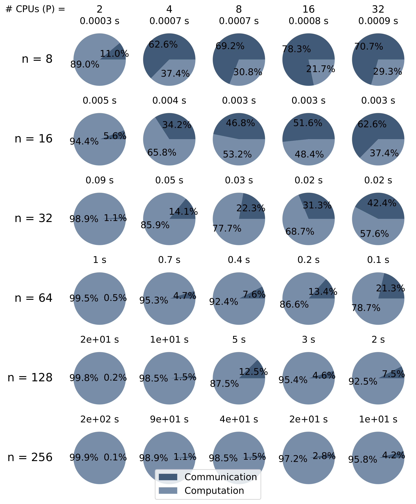
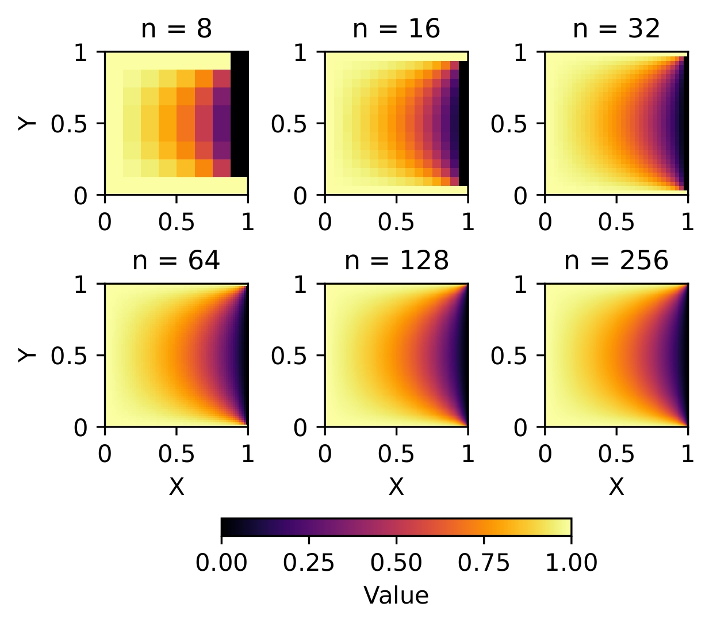

Project
Poisson Solver MPI Speedup
This project studies the numerical solution of the 2D Poisson equation with MPI in C++
and focuses on time performance. The report shows when adding processors gives a clear
gain, and when communication and initialization overhead start to limit the benefit.
Results first

Time to solution
Larger problem sizes lead to longer computation times, and increasing the number
of CPUs improves performance for medium and large scale problems
(n > 16). For those cases, doubling P implies
approximately a reduction by a factor of 2 in the time taken.
Open the original PDF

Speedup
\[
SP := \frac{T_1}{T_P} \le P
\]
Here, \(T_1\) is the execution time on one processor and \(T_P\) is the
execution time on \(P\) processors.
For medium and large scale problems (n > 16), speed-up improves
as the number of processors P increases. The observed gains remain
limited by the parts of the runtime that do not scale ideally, and increasing the
problem size n gives smaller speed-up in the reported experiments.
Open the original PDF
Trade-off in practice
MPI helps for medium and large problems, where the computational workload is high
enough to benefit from the distribution across processors. For small problems,
efficiency becomes worse when P increases, because communication and
initialization overhead become more significant.
Amdahl's law states that if a fraction s of a computation is serial,
then the speed-up achievable on P processors is bounded by:
\[
SP \le \frac{1}{s + \frac{1-s}{P}}
\]
Here, s represents the serial fraction of the runtime. In this project,
the communication and synchronization overhead contribute to the part that prevents
ideal scaling, which is why increasing P does not lead to unlimited
gains.
Communication vs computation

Computation vs communication
As the spatial resolution n increases, the proportion of computation
time rises, while communication time remains relatively stable. When the number of
CPUs increases, the proportion of time spent on communication becomes more
pronounced because of synchronization requirements.
Open the original PDF
What problem is being solved?
The numerical task is the 2D Poisson equation on a square domain, discretized on a
regular grid and solved iteratively with a Jacobi method distributed across MPI
processes.
\[
-\Delta u(x,y) = f(x,y), \qquad (x,y) \in [0,1]^2
\]
\[
u(x,y) = 1 \qquad \text{on the boundary}
\]

The solution figure gives context for the numerical problem before the focus shifts
to MPI performance and the computation-communication trade-off.
Open the original PDF
Technical details
The implementation uses a Jacobi iteration in C++ with MPI-based domain
decomposition. Each process updates its local subdomain and exchanges boundary
information with neighboring processes.
The report analyzes runtime, speed-up, efficiency, and the relative weight of
computation versus communication across several problem sizes and CPU counts.
See the full report and source code below for the derivation, implementation
details, experimental setup, and complete discussion.